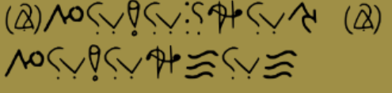

Cl0ckbreak3r: Üdvözöllek a forradalomban... Használd a "segítség" kódot
Utolsó feladványodban, megkell majd fejtened az alábbi kódot... ide viszont csak akkor tudsz eljutni, ha az összes kérdést megválaszolod

Gratulálok, a nyereménye hát simogatás a hétvégén:3